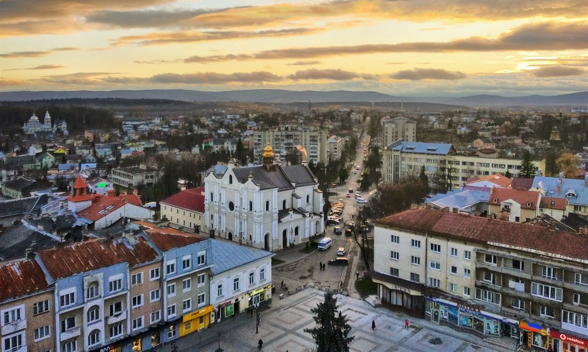
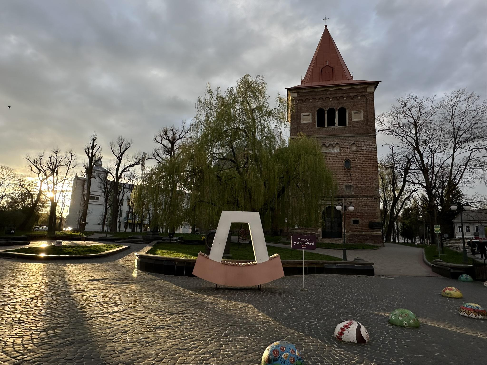
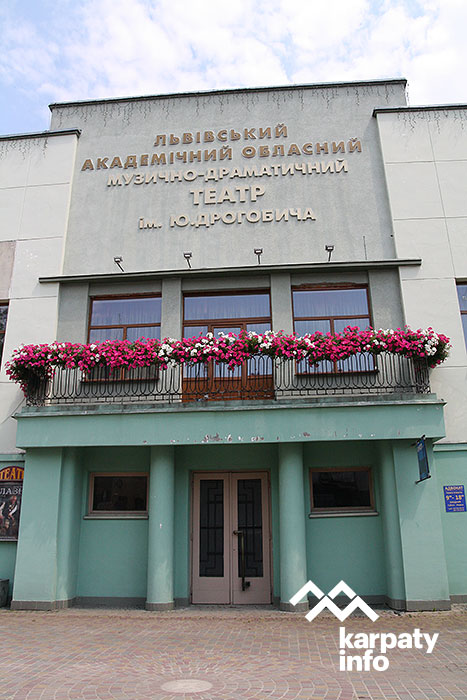
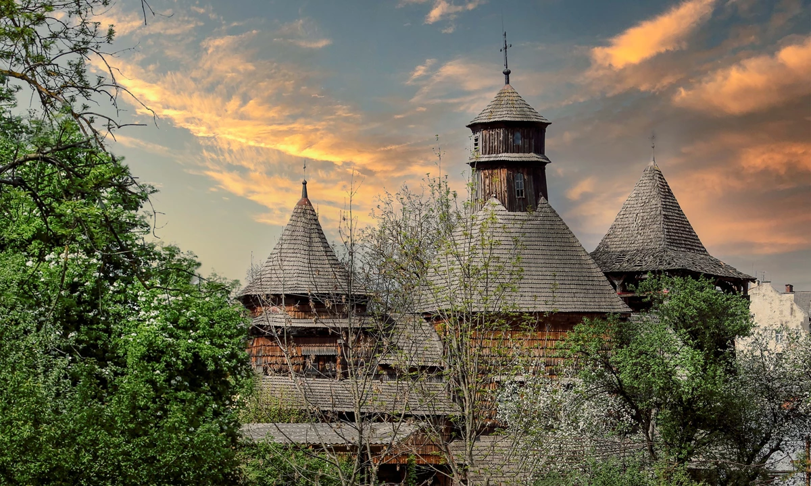
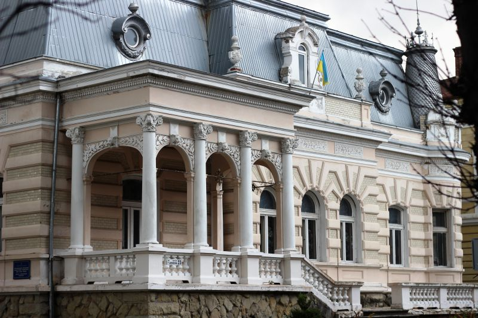

Дізнайся більше про місто Дрогобич – його історію, культуру та основні пам'ятки.
Відкрийте нові місця для себе
Топ історичних локацій у Дрогобичі
Прогулюєтесь Дрогобичем і не знаєте, яку локацію відвідати? Топ місць у Дрогобичі, які буде цікаво відвідати
туристам,
а також ще раз оцінити їх місцевим жителям. У добірку увійшли як історичні, так і популярні локації для
фото.
У 2019 році на площі Замкова гора у Дрогобичі встановили логолавку, а біля
неї - напис «Мамо, я у Дрогобичі».Ця локація одразу стала улюбленим місцем для фото для багатьох
дрогобичан та гостей міста.Читати далі
А ви знали, що у Дрогобичі є своя Ейфелева вежа? Щоправда, у мініформаті.
Інсталяція розташована неподалік від площі Замкова гора та збирає прихильність дрогобичан і гостей
міста, які полюбляють оригінальні фото. Знайти вежу можна навпроти туристичної агенції Relax
Tour.Читати далі
Дрогобицька ратуша - одна з візитівок нашого міста. А на вежу ратуші
підіймаються чи не всі туристи, щоб помилуватись Дрогобичем зверху. Ну і звісно зробити фото. Як
не зробити фото на тлі старовинного Дрогобича?Читати далі
Вся сіль у Дрогобичі, та навіть під ним - на Площі Ринок на рівні бруківки
під склом встановили топки солі.
“При потребі розбити скло” - така назва об'єкта символізує стратегічні запаси солі, у разі
закінчення видобутку на солевиварювальному заводі.
Це місце також полюбилось туристам, як оригінальна локація для фото.Читати далі
В листопаді 2022 року у парку Дрогобицького державного педагогічного
університету імені Івана Франка відкрили лавку пам’яті Бруно Шульца. Інсталяція має назву Лавка
Мрій Блакитноокого. Вона розташована навпроти центрального корпусу університету, де свого часу і
навчався Бруно Шульц.Читати далі
Вілла Яна Нев’ядомського — пам’ятка архітектури місцевого значення,
збудована в 1903 році. Це будівля з поєднанням різних архітектурних форм і багатим декором.
Власник будинку, Ян Нев’ядомський, був пекарем, банкіром, політиком та бургомістром Дрогобича. Він
був одним з перших власників телефону в місті, а в будинку досі зберігається ретро-телефон 1926
року, який працює й сьогодні.Читати далі
Гімназію імені Франца-Йосифа в Дрогобичі заснували в середині 19 століття.
Зараз там навчаються студенти факультету української та іноземної філології Дрогобицького
університету. Іван Франко навчався у цій гімназії з 1867 по 1875 роки. Враження від учителів,
таких як Іван Верхратський та Юлій Турчинський, стали основою для його літературного розвитку, що
він описав у творах "Спомини — із моїх гімназійних часів" та "Гірчичне зерно".Читати далі
Костел Святого Варфоломея в Дрогобичі — готична споруда, побудована після
наказу короля Ягайла в 1392 році. У 1511 році храм освятив львівський архієпископ Бернард Вільчек.
Після Другої світової війни костел використовували як склад, але у грудні 1989 року він знову
відкрився для вірян. Сьогодні костел є важливою частиною туристичного маршруту і активно
використовується для служби.Читати далі
Церква Святого Юра — частина Світової спадщини ЮНЕСКО та музею
"Дрогобиччина". Храм побудований без використання цвяхів, частини з'єднували дерев'яними кілками.
У 1657–1678 роках майстер Григорій Тесля надав церкві її нинішній вигляд. В середині є унікальні
розписи та іконостас 17 століття, авторства Стефана Медицького. У 2022 році церкву оцифрували, що
дозволяє проводити віртуальні екскурсії.Читати далі
Дрогобицький солевиварювальний завод — єдине підприємство в Європі, де сіль
виготовляють за давнім методом виварювання з природної ропи. Спочатку розсіл видобувають з шахти,
очищають, випарюють на дровах і подрібнюють. Перша згадка про Дрогобицьку сіль датується 1390
роком. Завод постачав сіль до різних регіонів України. Сьогодні він виготовляє близько 700 кг солі
щодня.Читати далі
Будівля, збудована в 1903 році, з 1939 по 1941 рік була обласним
управлінням НКВС. Тут було закатовано понад 1200 осіб. Меморіал «Тюрма на Стрийській» відкрили в
2012 році, а у 2018-2019 роках виявлено останки ще 78 жертв. Нині це частина Дрогобицького
університету.Читати далі
Дрогобицька хоральна синагога в Дрогобичі є пам’ятником архітектури –
однією серед восьми з двадцяти, а за іншими свідченнями – двадцяти трьох синагог Дрогобича, що
залишилися у нас після Другої Світової війни.Читати далі
Храм та дзвіниця. Пам'ятка української дерев'яної архітектури XV–XVII ст. національного значення.
Тут збережені унікальні за іконографією розписи у святилищі храму.
Працюємо:У Відділі дерев’яної архітектури (церкви Святого Юра та Воздвиження Чесного Хреста) –
середа
Галерея сакрального мистецтва в Дрогобичі відкрита в 1996 році у будинку, який було збудовано на
початку ХХ століття віцебургомістром Якубом Файєрштейном.
Фасад невеликої будівлі в стилі сецесії повністю зберігся.
Особливо цінні експонати – старовинні бойківські ікони XVI-XX століть.
Вартість вхідних квитків:
Для дорослих — 50 грн.
Для студентів — 30 грн.
Для дітей — 20 грн.
Вартість екскурсії:
100-200 грн.
Працює: 10:00-17:00.
Номер телефону: +38 (03244) 2-20-35
Дрогобич
(292 відгуки)
У 2005 р. музей "Дрогобиччина" отримав будівлю початку ХХ ст., відому як "Вілла Б'янки", де
облаштовано Палац мистецтв. Тут проходять художні виставки та діють експозиції:
"Бойківська хата" – предмети побуту.
"Дрогобицька вишивка" – особливі техніки та авторські роботи.
"Бойківська писанка" – давні та сучасні писанки, зокрема вишиті.
Український живопис ХХ ст.
У Палаці мистецтв представлені твори Дрогобицької асоціації (ДАХ). З 2001 р. музейна колекція
поповнилась настінними малюнками Бруно Шульца, про якого розповідає окрема експозиція.
Вартість вхідних квитків:
Для дорослих — 50 грн.
Для дітей — 30 грн. Вартість екскурсії:
За домовленістю.
Працює: 10:00-18:00, понеділок — вихідний.
Номер телефону: +38 (03244) 2-17-17
Дрогобич
(65 відгуки)
Експозиція висвітлює історію Дрогобича: археологічні знахідки, розвиток цехового ремесла, соляної
та нафтовидобувної промисловості, а також реліквії, пов’язані з І. Франком, С. Ковалівим, У.
Кравченко, Ю. Котермаком.
Окремі виставки:
«Воїни гідності і свободи» – фотодокументи та артефакти Революції Гідності.
«Побут і ремесла Бойківщини».
«Тюрма на Стрийській» – історико-меморіальний комплекс жертв комуністичного терору.
Неподалік від центру Дрогобичу знаходиться одна з найстаріших будівель — дрогобицький шпихлір
(житниця). Ця будівля була зведена за наказом цісаря Австро-Угорської імперії у 1778 р.
Раніше ця будівля входила до складу комплексу споруд, що належали міському старості.
Дрогобич
(6 відгуки)
Цікаві факти:
Шпихліри зводили для зберігання запасів зерна, що могли знадобиться під час війни чи неврожаю.
Довжина шпихліру складає 30 м.
Старовинну комору — унікальна господарська будівля, що зберіглась до наших часів у первісному
вигляді.
Історико-меморіальний комплекс "Тюрма на Стрийській" відкрито 2013 року в колишній катівні НКВС у
дворі Повітового суду Дрогобича.
У 1939-1941 та 1944-1959 роках тут діяло управління НКВС із внутрішньою в’язницею, де закатовано
щонайменше 1200 осіб. Будівля суду, зведена на початку ХХ ст., була символом тоталітаризму,
використовувалася польською, радянською та німецькою владою.
Нині тут корпус Інституту фізики, математики, економіки та інноваційних технологій ДДПУ.
Меморіал та музей «Тюрма на Стрийській» створено за проєктом архітектора Максима Чирки. Експозиція
висвітлює сталінський терор, репресії НКВС, окупацію, містить фотомартиролог жертв, особисті речі
закатованих та знаряддя катувань.
Кімната-музей Бруно Шульца
Адреса:вулиця Івана Франка, 24 (головний корпус Дрогобицького державного педагогічного
університету у вчительському кабінеті колишньої гімназії);
Номер телефону: +38 (03244) 5-11-22
Дрогобич
(12 відгуки)
Музей був створений за ініціативи першого керівника Полоністичного науково-інформаційного центру
Ігоря Менька.
Серед експонатів можна побачити першовидання "Цинамонових крамниць" Бруно Шульца, праці Єжи
Фіцовського, погруддя Бруно Шульца, автором якого є Пйотр Фліт, а також видання присвячені творчості
Шульца, авторами яких є професори Владислава Панаса та Єжи Яжембського.
Додаткові фото міста
Дрогобич
Ласкаво просимо до Дрогобича – мальовничого куточка Західної України, де кожна вулиця дихає історією, а
кожен будинок приховує легенду. Це місто солі, величної архітектури, ароматної кави та привітних людей.





Заклик до дії
Готовий до незабутньої подорожі. Пам'ятай про нас!
"Поринь у атмосферу одного з найстаріших міст України. Дізнайся більше про його унікальні пам'ятки,
захоплюючі історії та місця, що надихають."